산업위생관리기사 (2018-08-19 기출문제)
1과목: 산업위생학개론
1. 작업장에서 누적된 스트레스를 개인차원에서 관리하는 방법에 대한 설명으로 틀린 것은?
- 신체검사를 통하여 스트레스성 질환을 평가한다.
- 자신의 한계와 문제의 징후를 인식하여 해결방안을 도출한다.
- 명상, 요가, 선(禪) 등의 긴장 이완훈련을 통하여 생리적 휴식상태를 점검한다.
- 규칙적인 운동을 피하고, 직무외적인 취미, 휴식, 즐거운 활동 등에 참여하여 대처능력을 함양한다.
(정답률: 87%)

2. 중대재해 또는 산업재해가 다발하는 사업장을 대상으로 유사사례를 감소시켜 관리하기 위하여 잠재적 위험성의 발견과 그 개선대책의 수립을 목적으로 고용노동부장관이 지정하는 자가 실시하는 조사·평가를 무엇이라 하는가?
- 안전·보건진단
- 사업장 역학조사
- 안전·위생진단
- 유해·위험성 평가
(정답률: 75%)
3. 상시근로자수가 100명인 A 사업장의 연간 재해발생건수가 15건이다. 이때의 사상자가 20명 발생하였다면 이 사업장의 도수율은 약 얼마인가? (단, 근로자는 1인당 연간 2200시간을 근무하였다.)
- 68.18
- 90.91
- 150.00
- 200.00
(정답률: 79%)
4. 1800년대 산업보건에 관한 법률로서 실제로 효과를 거둔 영국의 공장법의 내용과 거리가 가장 먼 것은?
- 감독관을 임명하여 공장을 감독한다.
- 근로자에게 교육을 시키도록 의무화한다.
- 18세 미만 근로자의 야간작업을 금지한다.
- 작업할 수 있는 연령을 8세 이상으로 제한한다.
(정답률: 85%)
5. 사무실 등 실내 환경의 공기질 개선에 관한 설명으로 틀린 것은?
- 실내 오염원을 감소한다.
- 방출되는 물질이 없거나 매우 낮은(기준에 적합한( 건축자재를 사용한다.
- 실외 공기의 상태와 상관없이 창문 개폐 횟수를 증가하여 실외 공기의 유입을 통한 환기 개선이 될 수 있도록 한다.
- 단기적 방법은 베이트 아웃(bake-out)으로 새 건물에 입주하기 전에 보일러 등으로 실내를 가열하여 각종 유해물질이 빨리 나오도록 한 후 이를 충분히 환기시킨다.
(정답률: 88%)
6. 실내 공기오염과 가장 관계가 적은 인체 내의 증상은?
- 광과민증(photosensitization)
- 빌딩증후군(sick building syndrome)
- 건물관련질병(building related disease)
- 복합화합물질민감증(multiple chemical sensitivity)
(정답률: 87%)
7. 육체적 작업능력(PWC)이 16kcal/min인 근로자가 1일 8시간 동안 물체를 운반하고 있고, 이때의 작업대사량은 9kcal/min이고, 휴식 시의 대사량은 1.5kcal/min이다. 적정휴식시간과 작업시간으로 가장 적합한 것은?
- 매시간당 25분 휴식, 35분 작업
- 매시간당 29분 휴식, 31분 작업
- 매시간당 35분 휴식, 25분 작업
- 매시간당 39분 휴식, 21분 작업
(정답률: 79%)
8. 국소피로를 평가하기 위하여 근전도(EMG)검사를 실시하였다. 피로한 근육에서 측정된 현상을 설명한 것으로 맞는 것은?
- 총전압의 증가
- 평균 주파수 영역에서 힘(전압)의 증가
- 저주파수(0~40Hz) 영역에서 힘(전압)의 감소
- 고주파수(40~200Hz) 영역에서 힘(전압)의 증가
(정답률: 68%)
9. 다음은 A전철역에서 측정한 오존의 농도이다. 기하평균농도는 약 몇 ppm인가?
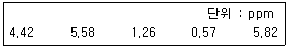
- 2.07
- 2.21
- 2.53
- 2.74
(정답률: 77%)
10. 정상작업에 대한 설명으로 맞는 것은?
- 두 다리를 뻗어 닿는 범위이다.
- 손목이 닿을 수 있는 범위이다.
- 전박(前膊)과 손으로 조작할 수 있는 범위이다.
- 상지(上肢)와 하지(下肢)를 곧게 뻗어 닿는 범위이다.
(정답률: 83%)
11. 산업재해 보상에 관한 설명으로 틀린 것은?
- 업무상의 재해란 업무상의 사유에 따른 근로자의 부상·질병·장해 또는 사망을 의미한다.
- 유족이란 사망한 자의 손자녀·조무모 또는 형제자매를 제외한 가족의 기본구성인 배우자·자녀·부모를 의미한다.
- 장해란 부상 또는 질병이 치유되었으나 정신적 또는 육체적 훼손으로 인하여 노동능력이 상실되거나 감소된 상태를 의미한다.
- 치유란 부상 또는 질병이 완치되거나 치료의 효과를 더 이상 기대할 수 없고 그 증상이 고정된 상태에 이르게 된 것을 의미한다.
(정답률: 74%)
12. 산업피로의 예방대책으로 틀린 것은?
- 작업과정에 따라 적절한 휴식을 삽입한다.
- 불필요한 동작을 피하여 에너지 소모를 적게 한다.
- 충분한 수면은 피로회복에 대한 최적의 대책이다.
- 작업시간 중 또는 작업 전·후의 휴식시간을 이용하여 축구, 농구 등의 운동시간을 삽입한다.
(정답률: 90%)
13. 신체적 결함과 그 원인이 되는 작업이 가장 적합하게 연결된 것은?
- 평발 – VDT 작업
- 진폐증 – 고압, 저압작업
- 중추신경 장해 – 광산작업
- 경견완증후근 – 타이핑작업
(정답률: 86%)
14. 작업자의 최대 작업영역(maximum working area)이란 무엇인가?
- 하지(下地)를 뻗어서 닿는 작업영역
- 상지(上肢)를 뻗어서 닿는 작업영역
- 전박(前膊)을 뻗어서 닿는 작업영역
- 후박(後膊)을 뻗어서 닿는 작업영역
(정답률: 80%)
15. 산업안전보건법령에 따라 작업환경 측정방법에 있어 동일 작업근로자수가 100명을 초과하는 경우 최대 시료채취 근로자수는 몇 명으로 조정할 수 있는가?
- 10명
- 15명
- 20명
- 50명
(정답률: 77%)
16. 미국산업위생학회 등에서 산업위생전문가들이 지켜야 할 윤리강령을 채택한 바 있는데, 전문가로서의 책임에 해당하는 것은?
- 일반 대중에 관한 사항은 정직하게 발표한다.
- 성실성과 학문적 실력 측면에서 최고 수준을 유지한다.
- 위험요소와 예방 조치에 관하여 근로자와 상담한다.
- 신뢰를 존중하여 정직하게 권고하고, 결과와 개선점을 정확히 보고한다.
(정답률: 81%)
17. 사업주가 관계 근로자 외에는 출입을 금지시키고 그 뜻을 보기 쉬운 장소에 게시하여야 하는 작업장소가 아닌 것은?
- 산소농도가 18%미만인 장소
- 탄산가스의 농도가 1.5%를 초과하는 장소
- 일산화탄소의 농도가 30ppm을 초과하는 장소
- 황화수소 농도가 100만분의 1을 초과하는 장소
(정답률: 74%)
18. 여러 기관이나 단체 중에서 산업위생과 관계가 가장 먼 기관은?
- EPA
- ACGIH
- BOHS
- KOSHA
(정답률: 67%)
19. 직업병의 진단 또는 판정시 유해요인 노출 내용과 정도에 대한 평가가 반드시 이루어져야 한다. 이와 관련한 사항과 가장 거리가 먼 것은?
- 작업환경측정
- 과거 직업력
- 생물학적 모니터링
- 노출의 추정
(정답률: 75%)
20. 요통이 발생되는 원인 중 작업동작에 의한 것이 아닌 것은?
- 작업 자세의 불량
- 일정한 자세의 지속
- 정적인 작업으로 전환
- 체력의 과신에 따른 무리
(정답률: 59%)
2과목: 작업위생측정 및 평가
21. 태양관선이 내리 쬐는 옥외작업장에서 온도가 다음과 같을 때, 습구흑구 온도지수는 약 몇 ℃인가? (단, 고용노동부 고시를 기준으로 한다.)
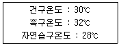
- 27
- 28
- 29
- 31
(정답률: 82%)
22. 다음 1차 표준 기구 중 일반인적 사용범위가 10~500mL/분이고, 정확도가 ±0.⑤~0.25%로 높아 실험실에서 주로 사용하는 것은?
- 폐활량계
- 가스치환병
- 건식가스미터
- 습식테스트 미터
(정답률: 58%)
23. 다음 중 고열장해와 가장 거리가 먼 것은?
- 열사병
- 열경련
- 열호족
- 열발진
(정답률: 86%)
24. 수은의 노출기준이 0.⑤mg/m3이고 증기압이 0.0018mmHg인 경우, VHR(Vapor Hazard Ratio)는 약 얼마인가? (단, 25℃, 1기압 기준이며, 수은 원자량은 200.59이다.)
- 306
- 321
- 354
- 389
(정답률: 42%)
25. 다음 중 6가 크롬 시료 채취에 가장 적합한 것은?
- 밀리포어 여과지
- 증류수를 넣은 버블러
- 휴대용 IR
- PVC막 여과지
(정답률: 85%)
26. 한 공정에서 음압수준이 75dB인 소음이 발생되는 장비 1대와 81dB인 소음이 발생되는 장비 1대가 각각 설치되어 있을 때, 이 장비들이 동시에 가동되는 경우 발생되는 소음의 음압수준은 약 몇 dB인가?
- 82
- 84
- 86
- 88
(정답률: 73%)
27. 제관 공장에서 오염물질 A를 측정한 결과가 다음과 같다면, 노출농도에 대한 설명으로 옳은 것은?
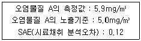
- 허용농도를 초과한다.
- 허용농도를 초과할 가능성이 있다.
- 허용농도를 초과하지 않는다.
- 허용농도를 평가할 수 없다.
(정답률: 69%)
28. 근로자에게 노출되는 호흡성먼지를 측정한 결과 다음과 같았다. 이 때 기하평균농도는? (단, 단위는 mg/m3)
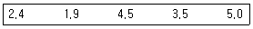
- 3.04
- 3.24
- 3.54
- 3.74
(정답률: 74%)
29. 어떤 작업장에서 액체혼합물이 A가 30%, B가 50%, C가 20%인 중량비로 구성되어 있다면, 이 작업장의 혼합물의 허용 농도는 몇 mg/m3인가? (단, 각 물질의 TLV는 A의 경우 1600mg/m3, B의 경우 720mg/m3, C의 경우 670mg/m3이다.)
- 101
- 257
- 847
- 1151
(정답률: 72%)
30. 작업장에서 5000ppm의 사염화에틸렌이 공기 중에 함유되었다면 이 작업장 공기의 비중은 얼마인가? (단, 표준기압, 온도이며 공기의 분자량은 29이고, 사염화에틸렌의 분자량은 166이다.)
- 1.024
- 1.032
- 1.047
- 1.⑤4
(정답률: 39%)
31. 일산화탄소 0.1m3가 밀폐된 차고에 방출되었다면, 이때 차고 내 공기중 일산화탄소의 농도는 몇 ppm인가? (단, 방출전 차고 내 일산화탄소 농도는 0ppm이며, 밀폐된 차고의 체적은 100000m3이다.)
- 0.1
- 1
- 10
- 100
(정답률: 50%)
32. 입자상 물질을 입자의 크기별로 측정하고자 할 때 사용할 수 있는 것은?
- 가스크로마토크래피
- 사이클론
- 원자발광분석기
- 직경분립충돌기
(정답률: 81%)
33. 어느 작업장에 있는 기계의 소음 측정 결과가 다음과 같을 때, 이 작업장에 음압레벨 합산은 약 몇 dB인가?
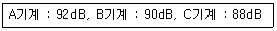
- 92.3
- 93.7
- 95.1
- 98.2
(정답률: 67%)
34. 작업장 소음수준을 누적소음노출량 측정기로 측정할 경우 기기 설정으로 옳은 것은? (단, 고용노동부 고시를 기준으로 한다.)
- Threshold = 80dB, Criteria = 90dB, Exchange Rate = 5dB
- Threshold = 80dB, Criteria = 90dB, Exchange Rate = 10dB
- Threshold = 90dB, Criteria = 90dB, Exchange Rate = 10dB
- Threshold = 90dB, Criteria = 90dB, Exchange Rate = 5dB
(정답률: 86%)
35. 로타미터에 관한 설명으로 옳지 않은 것은?
- 유량을 측정하는 데 가장 흔히 사용되는 기기이다.
- 바닥으로 갈수록 점점 가늘어지는 수직관과 그 안에서 자유롭게 상하로 움직이는 부자로 이루어져 있다.
- 관은 유리나 투명 플라스틱으로 되어 있으며 눈금이 새겨져 있다.
- 최대 유량과 최소 유량의 비율이 100:1 범위이고 ±0.5% 이내의 정확성을 나타낸다.
(정답률: 71%)
36. 어느 작업장에서 샘플러를 사용하여 분진농도를 측정한 결과, 샘플링 전, 후의 필터의 무게가 각각 32.4mg, 44.7mg이었을 때, 이 작업장의 분진 농도는 몇 mg/m3인가? (단, 샘플링에 사용된 펌푸의 유량은 20L/min이고, 2시간 동안 시료를 채취하였다.)
- 1.6
- 5.1
- 6.2
- 12.3
(정답률: 70%)
37. 온도 표시에 대한 설명으로 틀린 것은? (단, 고용노동부 고시를 기준으로 한다.)
- 절대온도는 K로 표시하고 절대온도 0K는 –273℃로 한다.
- 실온은 1~35℃, 미온은 30~40℃로 한다.
- 온도의 표시는 셀시우스(Celcius)법에 따라 아라비아 숫자의 오른쪽에 ℃를 붙인다.
- 냉수는 5℃이하, 온수는 60~70℃를 말한다.
(정답률: 82%)
38. 다음은 가스상 물질의 측정횟수에 관한 내용이다. ( )안에 들어갈 내용으로 옳은 것은?
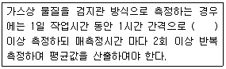
- 2회
- 4회
- 6회
- 8회
(정답률: 53%)
39. 측정값이 1, 7, 5, 3, 9일 때, 변이 계수는 약 몇 %인가?(오류 신고가 접수된 문제입니다. 반드시 정답과 해설을 확인하시기 바랍니다.)
- 13
- 63
- 133
- 183
(정답률: 49%)
40. 허용기준 대상 유해인자의 노출농도 측정 및 분석방법에 관한 내용으로 틀린 것은? (단, 고용노동부 고시를 기준으로 한다.)
- 바탕시험을 하여 보정한다 : 시료에 대한 처리 및 측정을 할 때, 시료를 사용하지 않고 같은 방법으로 조작한 측정치를 빼는 것을 말한다.
- 감압 또는 진공 : 따로 규정이 없는 한 760mmHg이하를 뜻한다.
- 검출한계 : 분석기기가 검출할 수 있는 가장 작은 양을 말한다.
- 정량한계 : 분석기기가 정량할 수 있는 가장 작은 양을 말한다.
(정답률: 57%)
3과목: 작업환경관리대책
41. 직경이 400mm인 환기시설을 통해서 50m3/min의 표준 상태의 공기를 보낼 때, 이 덕트 내의 유속은 약 몇 m/sec인가?
- 3.3
- 4.4
- 6.6
- 8.8
(정답률: 64%)
42. 개구면적이 0.6m2인 외부식 사각형 후드가 자유공간에 설치되어 있다. 개구면과 유해물질 사이의 거리는 0.5m이고 제어속도가 0.8m/s 일 때, 필요한 송풍량은 약 몇 m3/min인가? (단, 플랜지를 부착하지 않은 상태이다.)
- 126
- 149
- 164
- 182
(정답률: 61%)
43. 테이블에 붙여서 설치한 사각형 후드의 필요환기량(m3/min)을 구하는 식으로 적절한 것은? (단, 플렌지는 부착되지 않았고, A(m2)는 개구면적, X(m)는 개구부와 오염원 사이의 거리, V(m/sec)는 제어속도이다.)
- Q=V×(5X2+A)
- Q=V×(7X2+A)
- Q=60×V×(5X2+A)
- Q=60×V×(7X2+A)
(정답률: 72%)
44. 다음 중 강제환기의 설계에 관한 내용과 가장 거리가 먼 것은?
- 공기가 배출되면서 오염장소를 통과하도록 공기배출구와 유입구의 위치를 선정한다.
- 공기배출구와 근로자의 작업위치 사이에 오염원이 위치하지 않도록 주의하여야 한다.
- 오염물질 배출구는 가능한 한 오염원으로부터 가까운 곳에 설치하여 ‘점 환기’의 효과를 얻는다.
- 오염원 주위에 다른 작업 공정이 있으면 공기배출량을 공급량보다 약간 크게 하여 음압을 형성하여 주위 근로자에게 오염물질이 확산되지 않도록 한다.
(정답률: 73%)
45. 다음 중 작업환경 개선의 기본원칙인 대체의 방법과 가장 거리가 먼 것은?
- 시간의 변경
- 시설의 변경
- 공정의 변경
- 물질의 변경
(정답률: 76%)
46. 다음 중 대체 방법으로 유해작업환경을 개선한 경우와 가장 거리가 먼 것은?
- 유연 휘발유를 무연 휘발유로 대체한다.
- 블라스팅 재료로서 모래를 철구슬로 대체한다.
- 야광시계의 자판을 인에서 라듐으로 대체한다.
- 보온재료의 석면을 유리섬유나 암면으로 대체한다.
(정답률: 80%)
47. 조용한 대기 중에 실제로 거의 속도가 없는 상대로 가스, 증기, 흄이 발생할 대, 국소환기에 필요한 제어속도범위로 가장 적절한 것은?
- 0.25~0.5m/sec
- 0.1~0.25m/sec
- 0.⑤~0.1m/sec
- 0.01~0.⑤m/sec
(정답률: 58%)
48. 직경이 2이고 비중이 3.5인 산화철 흄의 침강 속도는?
- 0.023cm/s
- 0.036cm/s
- 0.042cm/s
- 0.⑤4cm/s
(정답률: 73%)
49. 다음 중 덕트의 설치 원칙과 가장 거리가 먼 것은?
- 가능한 한 후드와 먼 곳에 설치한다.
- 덕트는 가능한 한 짧게 배치하도록 한다.
- 밴드의 수는 가능한 한 적게 하도록 한다.
- 공기가 아래로 흐르도록 하양구배를 만든다.
(정답률: 80%)
50. 송풍기의 송풍량이 4.17m3/sec이고 송풍기 전압이 300mmH2O인 경우 소요 동력은 약 몇 kW인가? (단, 송풍기 효율은 0.85이다.)
- 5.8
- 14.4
- 18.2
- 20.6
(정답률: 73%)
51. 다음 중 전기집진장치의 특징으로 옳지 않은 것은?
- 가연성 입자의 처리가 용이하다.
- 넓은 범위의 입경과 분진농도에 집진효율이 높다.
- 압력손실이 낮아 송풍기의 가동비용이 저렴하다.
- 고온 가스를 처리할 수 있어 보일러와 철강로 등에 설치할 수 있다.
(정답률: 67%)
52. 다음 중 밀어당김형 후드(push-pull hood)rk 가장 효과적인 경우는?
- 오염원의 발산량이 많은 경우
- 오염원의 발산농도가 낮은 경우
- 오염원의 발산농도가 높은 경우
- 오염원 발산면의 폭이 넓은 경우
(정답률: 67%)
53. 다음 중 국소배기장치에서 공기공급 시스템이 필요한 이유와 가장 거리가 먼 것은?
- 에너지 절감
- 안전사고 예방
- 작업장의 교차기류 유지
- 국소배기장치의 효율 유지
(정답률: 76%)
54. 화재 및 폭발방지 목적으로 전체 환기시설을 설치할 때, 필요 환기량 계산에 필요 없는 것은?
- 안전 계수
- 유해물질의 분자량
- TLV(Threshold Limit Value)
- LEL(Lower Explosive Limit)
(정답률: 46%)
55. 다음 호흡용 보호구 중 안면밀착형인 것은?
- 두건형
- 반면형
- 의복형
- 헬멧형
(정답률: 77%)
56. 분리식 특급 방진 마스크의 여과자 포집 효율은몇 %이상인가?
- 80.0
- 94.0
- 99.0
- 99.95
(정답률: 74%)
57. 다음 중 유해물질별 송풍관의 적정 반송속도로 옳지 않은 것은?
- 가스상 물질 – 10m/sec
- 무거운 물질 – 25m/sec
- 일반 공업 물질 – 20m/sec
- 가벼운 건조 물질 – 30m/sec
(정답률: 73%)
58. 후드의 정압이 12.00mmH2O이고 덕트의 속도앞이 0.80mmH2O일 때, 유입계수는 얼마인가?
- 0.129
- 0.194
- 0.258
- 0.387
(정답률: 58%)
59. 21℃의 기체를 취급하는 어떤 송풍기의 송풍량이 20m3/min일 때, 이 송풍기가 동일한 조건에서 50℃의 기체를 취급한다면 송풍량은 몇 m3/min인가?
- 10
- 15
- 20
- 25
(정답률: 55%)
60. 다음 중 방진마스크에 대한 설명으로 옳지 않은 것은?
- 포집효율이 높은 것이 좋다.
- 흡기저항 상승률이 높은 것이 좋다.
- 비휘발성 입자에 대한 보호가 가능하다.
- 여과효율이 우수하려면 필터에 사용되는 섬유의 직경이 작고 조밀하게 압축되어야 한다.
(정답률: 76%)
4과목: 물리적유해인자관리
61. 작업장의 습도를 측정한 결과 절대습도는 4.57mmHg, 포화습도는 18.25mmHg이었다. 이 작업장의 습도 상태에 대한 설명으로 맞는 것은?
- 적당하다.
- 너무 건조하다.
- 습도가 높은 편이다.
- 습도가 포화상태이다.
(정답률: 62%)
62. 소음에 의한 인체의 장해 정도(소음성난청)에 영향을 미치는 요인이 아닌 것은?
- 소음의 크기
- 개인의 감수성
- 소음 발생 장소
- 소음의 주파수 구성
(정답률: 68%)
63. 소독작용, 비타민 D형성, 피부색소침착 등 생물학적 작용이 강한 특성을 가진 자외선(Dorno 선)의 파장 범위는?
- 1000Å ~ 2800Å
- 2800Å ~ 3150Å
- 3150Å ~ 4000Å
- 4000Å ~ 4700Å
(정답률: 78%)
64. 이온화 방사선의 건강영향을 설명한 것으로 틀린 것은?
- α입자는 투과력이 작아 우리 피부를 직접 통과하지 못하기 때문에 피부를 통한 영향은 매우 작다.
- 방사선은 생체내 구성원자나 분자에 결합되어 전자를 유리시켜 이온화하고 원자의 들뜸현상을 일으킨다.
- 반응성이 매우 큰 자유라디칼이 생성되어 단백질, 지질, 탄수화물, 그리고 DNA 등 생체 구성 성분을 손상시킨다.
- 방사선에 의한 분자수준의 손상은 방사선 조사 후 1시간 이후에 나타나고, 24시간 이후 DNA 손상이 나타난다.
(정답률: 53%)
65. 음의 세기레벨이 80dB에서 85dB로 증가하면 음의 세기는 약 몇 배가 증가하겠는가?
- 1.5배
- 1.8배
- 2.2배
- 2.4배
(정답률: 34%)
66. 전신진동 노출에 따른 건강 장애에 대한 설명으로 틀린 것은?
- 평형감각에 영향을 줌
- 산소 소비량과 폐환기량 증가
- 작업수행 능력과 집중력 저하
- 레이노드 증후군(Raynaud's phenomenon) 유발
(정답률: 63%)
67. 반향시간(reververation time)에 관한 설명으로 맞는 것은?
- 반향시간과 작업장의 공간부피만 알면 흡음량을 추정할 수 있다.
- 소음원에서 소음발생이 중지한 후 소음의 감소는 시간의 제곱에 반비례하여 감소한다.
- 반향시간은 소음이 닿는 면적을 계산하기 어려운 실외에서의 흡음량을 추정하기 위하여 주로 사용한다.
- 소음원에서 발생하는 소음과 배경소음간의 차이가 40dB인 경우에는 60dB만큼 소음이 감소하지 않기 때문에 반향시간을 측정할 수 없다.
(정답률: 51%)
68. 소음의 종류에 대한 설명으로 맞는 것은?
- 연속음은 소음의 간격이 1초 이상을 유지하면서 계속적으로 발생하는 소음을 의미한다.
- 충격소음은 소음이 1초 미만의 간격으로 발생하면서, 1회 최대 허영기준은 120dB(A)이다.
- 충격소음은 최대음압수준이 120dB(A)이상인 소음이 1초 이상의 간격으로 발생하는 것을 의미한다.
- 단속음은 1일 작업 중 노출되는 여러 가지 음압수준을 나타내며 소음의 반복음의 간격이 3초 보다 큰 경우를 의미한다.
(정답률: 68%)
69. 진동에 대한 설명으로 틀린 것은?
- 전신진동에 대해 인체는 대략 0.01m/s2지의 진동 가속도를 느낄 수 있다.
- 진동 시스템을 구성하는 3가지 요소는 질량(mass), 탄성(elasticity)과 댐핑(damping)이다.
- 심한 진동에 노출될 경우 일부 노출군에서 뼈, 관절 및 신경, 근육, 혈관 등 연부조직에 병변이 나타난다.
- 간헐적인 노출시간(주당 1일)에 대해 노출기준치를 초과하는 주파수-보정, 실효치, 성분가속도에 대한 급성노출은 반드시 더 유해하다.
(정답률: 56%)
70. 극저주파 방사선(Extremely Low Frequency Fields)에 대한 설명으로 틀린 것은?
- 강한 전기장의 발생원은 고전류장비와 같은 높은 전류와 관련이 있으며 강한 자기장의 발생원은 고전압장비와 같은 높은 전하와 관련이 있다.
- 작업장에서 발전, 송전, 전기 사용에 의해 발생되며 이들 경로에 있는 발전기에서 전력선, 전기설비, 기계, 기구 등도 잠재적인 노출원이다.
- 주파수가 1~3000Hz에 해당되는 것으로 정의되며, 이 범위 중 50~60Hz의 전력선과 관련한 주파수의 범위가 건강과 밀접한 연관이 있다.
- 특히 교류전기는 1초에 60번씩 극성이 바뀌는 60Hz의 저주파를 나타내므로 이에 대한 노출평가, 생물학적 및 인체영향 연구가 많이 이루어져 왔다.
(정답률: 41%)
71. 전리방사선에 해당하는 것은?
- 마이크로파
- 극저주파
- 레이져광선
- X선
(정답률: 78%)
72. 음력이 2watt인 소음원으로부터 50m떨어진 지점에서의 음압수준(sound pressure level)은 약 몇 dB인가? (단, 공기의 밀도는 1.2kg/m3, 공기에서의 음속은 344m/s로 가정한다.)
- 76.6
- 78.2
- 79.4
- 80.7
(정답률: 57%)
73. 소음에 관한 설명으로 맞는 것은?
- 소음의 원래 정의는 매우 크고 자극적인 음을 일컫는다.
- 소음과 소음이 아닌 것은 소음계를 사용하면 구분할 수 있다.
- 작업환경에서 노출되는 소음은 크게 연속음, 단속음, 충격음 및 폭발음으로 구분할 수 있다.
- 소음으로 인한 피해는 정신적, 심리적인 것이며 신체에 직접적인 피해를 주는 것은 아니다.
(정답률: 69%)
74. 다음 그림과 같이 복사체, 열차단판, 흑구온도계, 벽체의 순서로 배열하였을 때 열차단판의 조건이 어떤 경우에 흑구온도계의 온도가 가장 낮겠는가?
- 열차단판 양면을 흑색으로 한다.
- 열차단판 양면을 알루미늄으로 한다.
- 복사체 쪽은 알루미늄, 온도계 쪽은 흑색으로 한다.
- 복사체 쪽은 흑색, 온도계 쪽은 알루미늄으로 한다.
(정답률: 55%)
75. 작업장의 조도를 균등하게 하기 위하여 국소조명과 전체조명이 병용될 때, 일반적으로 전체조명의 조도는 국부조명의 어느 정도가 적당한가?
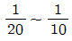
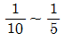
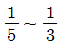
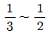
(정답률: 69%)
76. 동상의 종류와 증상이 잘못 연결된 것은?
- 1도 : 발적
- 2도 : 수포형성과 염증
- 3도 : 조직괴사로 괴저발생
- 4도 : 출혈
(정답률: 78%)
77. 1기압(atm)에 관한 설명으로 틀린 것은?
- 약 1kgf/cm2과 동일하다.
- torr로는 0.76에 해당한다.
- 수은주로 760mmHg과 동일하다.
- 수주(水柱)로 10332mmH2O에 해당한다.
(정답률: 68%)
78. 산소농도가 6%이하인 공기 중의 산소분압으로 맞는 것은? (단, 표준상태이며, 부피기준이다.)
- 45mmHg 이하
- 55mmHg 이하
- 65mmHg 이하
- 75mmHg 이하
(정답률: 69%)
79. 감압과 관련된 다음 설명 중 ( )안에 알맞은 내용으로 나열한 것은?
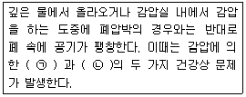
- ㉠ 폐수종, ㉡ 저산소증
- ㉠ 질소기포형성, ㉡ 산소중독
- ㉠ 가스팽창, ㉡ 질소기포형성
- ㉠ 가스압축, ㉡ 이산화탄소중독
(정답률: 64%)
80. 고압환경에서 발생할 수 있는 화학적인 인체 작용이 아닌 것은?
- 일산화탄소 중독에 의한 호흡곤란
- 질소마취작용에 의한 작업력 저하
- 산소중독증상으로 간질 모양의 경련
- 이산화탄소 불압증가에 의한 동통성 관절 장애
(정답률: 62%)
5과목: 산업독성학
81. 금속물질인 니켈에 대한 건강상의 영향이 아닌 것은?
- 접촉성 피부염이 발생한다.
- 폐나 비강에 발암작용이 나타난다.
- 호흡기 장해와 전신중독이 발생한다.
- 비타민 D를 피하주사하면 효과적이다.
(정답률: 58%)
82. 급성중독 시 우유와 계란의 흰자를 먹여 단백질과 해당 물질을 결합시켜 침전시키거나, BAL(dimercaprol)을 근육주사로 투여하여야 하는 물질은?
- 납
- 크롬
- 수은
- 카드뮴
(정답률: 74%)
83. 염료, 합성고무경화제의 제조에 사용되며 급성중독으로 피부염, 급성방광염을 유발하며, 만성중독으로는 방광, 요로계 종양을 유발하는 유해물질은?
- 벤지딘
- 이황화탄소
- 노말헥산
- 이염화메틸렌
(정답률: 58%)
84. 작업환경측정과 비교한 생물학적 모니터링의 장점이 아닌 것은?
- 모든 노출경로에 의한 흡수정도를 나타낼 수 있다.
- 분석 수행이 용이하고 결과 해석이 명확하다.
- 건강상의 위험에 대해서 보다 정확한 평가를 할 수 있다.
- 작업환경측정(개인시료)보다 더 직접적으로 근로자 노출을 추정할 수 있다.
(정답률: 48%)
85. 납중독에 관한 설명으로 틀린 것은?
- 혈청 내 철이 감소한다.
- 요 중 δ-ALAD 활성치가 저하된다.
- 적혈구 내 프로토포르피린이 증가한다.
- 임상증상은 위장계통장해, 신경근육계통의 장해, 중추신경계통의 장해 등 크게 3가지로 나눌 수 있다.
(정답률: 62%)
86. 직업성 천식이 유발될 수 있는 근로자와 거리가 가장 먼 것은?
- 채석장에서 돌을 가공하는 근로자
- 목분진에 과도하게 노출되는 근로자
- 빵집에서 밀가루에 노출되는 근로자
- 폴리우레탄 페인트 생산에 TDI를 사용하는 근로자
(정답률: 60%)
87. 무기성분진에 의한 진폐증이 아닌 것은?
- 규폐증(silicosis)
- 연초폐증(tabacosis)
- 흑연폐증(graphite lung)
- 용접공폐증(welder's lung)
(정답률: 60%)
88. 작업장에서 생물학적 모니터링의 결정인자를 선택하는 근거를 설명한 것으로 틀린 것은?
- 충분히 특이적이다.
- 적절한 민감도를 갖는다.
- 분석적인 변이나 생물학적 변이가 타당해야 한다.
- 톨루엔에 대한 건강위험 평가는 크레졸보다 마뇨산이 신뢰성이 있는 결정인자이다.
(정답률: 58%)
89. 피부 독성에 있어 경피흡수에 영향을 주는 인자와 가장 거리가 먼 것은?
- 온도
- 화학물질
- 개인의 민감도
- 용매(vehicle)
(정답률: 54%)
90. 할로겐화탄화수소에 관한 설명으로 틀린 것은?
- 대개 중추신경계의 억제에 의한 마취작용이 나타난다.
- 가연성과 폭발의 위험성이 높으므로 취급시 주의하여야 한다.
- 일반적으로 할로겐화탄화수소의 독성의 정도는 화합물의 분자량이 커질수록 증가한다.
- 일반적으로 할로겐화탄화수소의 독성의 정도는 할로겐원소의 수가 커질수록 증가한다.
(정답률: 54%)
91. 유리규산(석영) 분진에 의한 규폐성 결정과 폐포벽 파괴 등 망상 내피계 반응은 분진입자의 크기가 얼마일 때 자주 일어나는가?
- 0.1 ~ 0.5㎛
- 2 ~ 5㎛
- 10 ~ 15㎛
- 15 ~ 20㎛
(정답률: 55%)
92. 피부는 표피와 진피로 구분하는데, 진피에만 있는 구조물이 아닌 것은?
- 혈관
- 모낭
- 땀샘
- 멜라닌 세포
(정답률: 66%)
93. 호흡기계 발암성과의 관련성이 가장 낮은 것은?
- 석면
- 크롬
- 용접흄
- 황산니켈
(정답률: 36%)
94. 화학적 질식제에 대한 설명으로 맞는 것은?
- 뇌순환 혈관에 존재하면서 농도에 비례하여 중추신경 작용을 억제한다.
- 피부와 점막에 작용하여 부식작용을 하거나 수포를 형성하는 물질로 고농도 하에서 호흡이 정지되고 구강내 치아산식증 등을 유발한다.
- 공기 중에 다량 존재하여 산소분압을 저하시켜 조직 세포에 필요한 산소를 공급하지 못하게 하여 산소부족 현상을 발생시킨다.
- 혈액 중에서 혈색조와 결합한 후에 혈액의 산소운반 능력을 방해하거나, 또는 조직세포있는 철 산화요소를 불활성화 시켜 세포의 산소수용 능력을 상실시킨다.
(정답률: 59%)
95. 생물학적 모니터링을 위한 시료가 아닌 것은?
- 공기 중의 바이오 에어로졸
- 요 중의 유해인자나 대사산물
- 혈액 중의 유해인자나 대사산물
- 호기(exhaled air)중의 유해인자나 대사산물
(정답률: 75%)
96. 전신(계통)적 장애를 일으키는 금속 물질은?
- 납
- 크롬
- 아연
- 산화철
(정답률: 37%)
97. 단순 질식제에 해당되는 물질은?
- 탄산가스
- 아닐린가스
- 니트로벤젠가스
- 황화수소가스
(정답률: 69%)
98. 공기 중 일산화탄소 농도가 10mg/m3인 작업장에서 1일 8시간 동안 작업하는 근로자가 흡입하는 일산화탄소의 양은 몇 mg인가? (단, 근로자의 시간당 평균 흡기량은 1250L이다.)
- 10
- 50
- 100
- 500
(정답률: 54%)
99. 직업성 피부질환 유발에 관여하는 인자 중 간접적 인자와 가장 거리가 먼 것은?(문제 오류로 실제 시험에서는 모두 정답처리 되었습니다. 여기서는 1번을 누르면 정답 처리 됩니다.)
- 땀
- 인종
- 연령
- 성별
(정답률: 80%)
100. 미국정부산업위생전문가협의회(ACGI)의 발암물질 구분으로 동물 발암성 확인물질, 인체 발암성 모름에 해당되는 Group은?
- A2
- A3
- A4
- A5
(정답률: 60%)